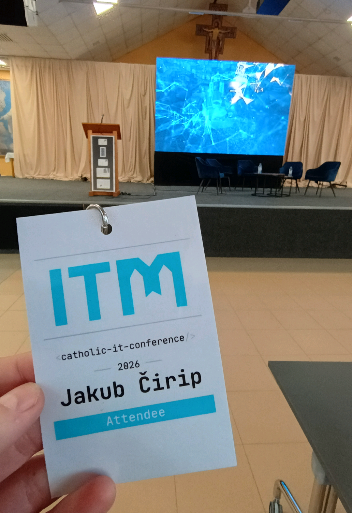
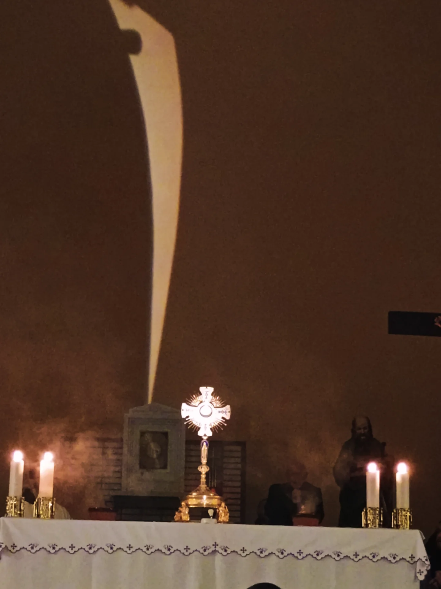
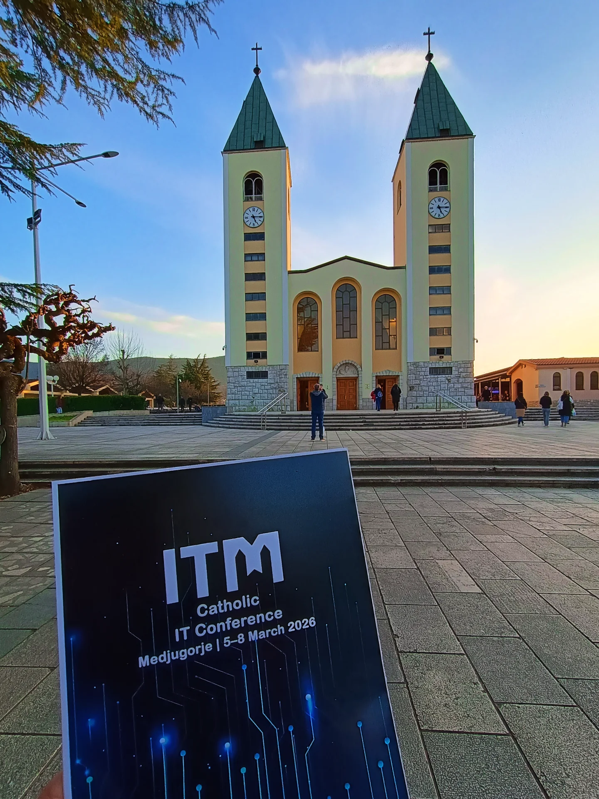

March 8, 2026
Medjugorje ITM 2026 Edition
"ITM 2026 - The Fusion of Technology and Spirituality in Medjugorje
ITM is a conference born from a call to use technology for evangelization. It brings together experts, clergy, and innovators to explore how AI and digital tools can support human dignity and spiritual growth. Set in the spiritual environment of Medjugorje, the event blends lectures, workshops, testimonies, and prayer, fostering ethical use of technology rooted in Christian values.
ITM has grown into an international community of 50+ members from 25+ countries, offering a safe and inspiring space for dialogue, collaboration, and creative engagement at the intersection of faith and technology."
ITM - Catholic IT Conference | Where Faith Meets Technology - My Story
The ITM 2026 conference took place March 5-8 in Medjugorje.
I first heard about this conference last summer. Since then, I have kept it in my mind and after New Year's Eve I started following the upcoming event. I tried to invite some of my friends from the IT field, but no one had time to go with me. Then I decided to go alone because I really wanted to participate in this event. So I signed up:)
I think that in this era of modern technology, technology has already penetrated deeply into the living of our faith and therefore it is important for a believer (especially an IT person) to know how it is developing, where the moral boundaries are and how to approach it in accordance with God's law. That was the reason why I wanted to take part in something like this and of course gain new experiences.
Later I offered the possibility of a trip for my parents, that I could take them with me by car and they could make their own program in Medjugorje while I was at the conference and they agreed. It was a pleasant time for them too.

ITM 2026
Conference program and experiences
Day 1.
I was a little nervous when I arrived, but from the first moment I knew it would be an interesting time. Right at the registration I met my friend Thomas, who was very, very nice and we later spent a lot of time together during the conference. Many thanks for being able to meet and get to know him:)
On the first day of the conference, there were several points on the program: Registration, Parish tour (I didn't even need that, since I've been to Medjugorje many times, but the local priest, Fr. Zvonimir, addressed very nice and interesting words to us at the time). The next point was the welcome to the conference and the opening prayer. Each block of the conference (morning or afternoon) began with a prayer - because it is right to surrender everything to God and ask him for sanctification;) During these blocks, presentations were held by experts in their fields, who brought different perspectives to various issues, mostly with the use of AI and faith. The evening program continued with Holy Mass and adoration. After that, there was dinner and networking.
Day 2.
The next day (Friday) I got up early in the morning and went to pray on the mountain Krizevac (Mountain of the Way of the Cross). And on the way down I met and greeted Nancy :) - it was very nice, Nancy shines like the Sun even though she is not the youngest anymore.
The morning program began again with a short prayer and then continued with presentations. One of the presentations was by Oliver M. Tuazon, who spoke about the sanctification of the AI work. He said that we as humans can sanctify our work (God constantly gives us opportunities to do so), but AI cannot sanctify its own work. The work of AI can only be sanctified by the hands of a man. This gives me a new different perspective on our work and the “work of AI”.
After three presentations, there was a breakout session where we all divided into 3 groups (each group was led by a presenter) and everyone joined a group of their choice. In these groups, an open discussion continued on the topics that were presented. I joined the group lead by Oliver. It was a great conversation in this group.
The next item on the agenda was lunch. During lunch, Oliver joined me and introduced himself to me. I must say that he radiates wisdom and humility at the same time. He was interested in where I was from and what I do. Later, during the entire conference program, we were already friends and I believe that one day he will come to see our Kosice (since I learned that he had already visited Bratislava) :)
The afternoon program had a similar character and interesting presentations followed. In the evening there was a holy mass followed by the Way of the Cross. So it was the first time I participated in the Way of the Cross in Medjugorje in the Croatian language and I must say that it is similar to ours, although there are many differences. Then there was dinner and during it there was again a space to meet new people;)
Day 3.
The third day began at Podbrdo - the place where the Virgin Mary first appeared in Medjugorje. The whole group from the conference joined together in praying the joyful and painful rosary, which was a very powerful experience for me when I realized that professional people - IT workers, professors, young people but also older people, with capacities in their fields, are coming together and taking responsibility for their work and wanting to be guided by God and Mary.
The rest of the day continued in a similar spirit as the previous day, presentations, lunch. In the afternoon session, interactive workshops focused on communication, getting to know each other, teamwork and sharing experiences were also held. In the evening, we prayed the rosary in the church, followed by mass and a beautiful adoration at the end.

Adoration Medjugorje
In the evening we had dinner at Radio Mir Medjugorje, where we had the opportunity to tour the entire radio station. It was interesting to see where the live translation of the Holy Mass and all the Medjugorje program into many languages is made. We also saw the recording studios and there was also a dinner with great food.
Day 4.
First thing in the morning was the prayer of the rosary at the statue of the risen Christ, followed by a closing speech and sharing our feelings from the conference. At the very end, Thomas and other friends joined us in a joint celebration of Holy Mass, followed by a return home.
Feelings
Personally, I am very pleased that I was able to participate in such an event (even though I was not invited by anyone, it seems to me as if it were according to the scripture: Luke 1:39). It was very enriching for me and I am happy for every person I had the opportunity to meet there. These people are a great encouragement to me in both hard work and faith.
Finally, I would like to express my heartfelt gratitude to the Virgin Mary, who has brought me to this place many times and also for being with us and helping us when our car broke down on the way home.
I believe that I will be able to participate again next year.
Thanks for reading, God bless you.

Church of St. James